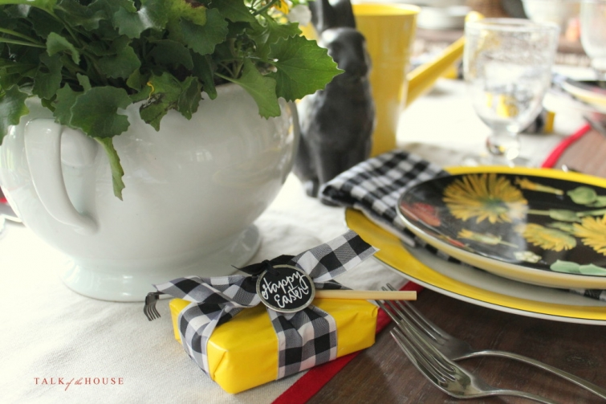
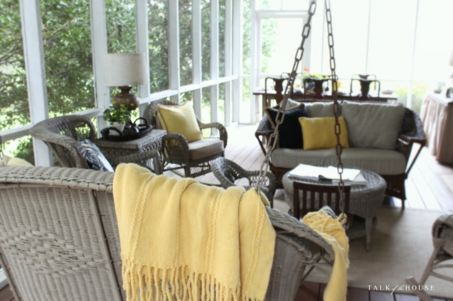
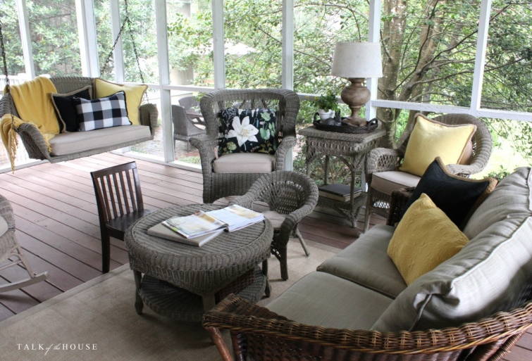

.png)
.PNG)
.PNG)
.PNG)
.PNG)
.PNG)
.JPG)
.JPG)
.PNG)
.PNG)


Welcome back for part 2 of the Spring Home Tour! Â I hope you had a wonderful Easter weekend. Â Ours was nice and relaxing…a fun visit with an out of town friend that I have known for a very long time and his wife, church on Sunday, a lunch on the porch, and a rainy afternoon.
I saved the porch for this part of the tour because I had my fingers crossed that we could have our Easter lunch out there.  Those weather people had predicted thunderstorms for Sunday afternoon, but the severe storms never came. Thank goodness. We dined with the sound of a nice…slow…steady…rain…making it rather cozy.
You can see that the black and yellow color scheme from the other rooms and the dark botanical prints have made it out to the porch as well. Â A couple of old bunnies from Target were added to the “garden” mix just for a bit of spring time fun.

I wanted to show you two versions of that arrangement over the porch desk. Â The one on the left has some of the Pottery Barn botanical plates that I hung first. Â But it just looked too busy to me. Â So I then tried it out with the simple white plates. Â Which version do you like better?
Not being very brave when it comes to patterns, I ended up leaving it with the plain white.  But that’s just me….you are probably more courageous. 🙂
But I was brave with the table setting.
There is nothing plain about it and that bright yellow!
I found a set of tiny garden tools at Hobby Lobby and thought they would be perfect with all the flowers. Â So I wrapped up small boxes of Whitman samplers and tied the “tools” on them for Easter treats.
For our lunch on the porch, the beverages, salads, and dessert were set out on the buffet table while the hot foods were served inside.
My Easter chalkboard for this year…
(One of my favorite hymns. 🙂 )
Our menu consisted of a strawberry and spinach salad, fruit cups, Quiche Lorraine, rosemary roasted new potatoes, roasted asparagus, biscuits with country ham, and coconut cake.  Unfortunately, I really really charred the asparagus.  I liked it because I like things very well done, but no one else did. 🙠 Oh well, there were plenty of other things to eat. 🙂  I did take one photo of the quiche out on the porch.  (The lighting was better out there.)
You can see the pie shell was a premade one.  I just sat it in the other dish because it was more sturdy when moving it in and out of the oven.  (And of course it looked better. 🙂 )
The delicious honey for our biscuits came from my out of town friend. Â He is a beekeeper, and the honey was a sneak peek at the wedding favor for his daughter’s upcoming marriage.
Yep, that’s my burnt asparagus in the photo.
I seem to be quite talented with burning foods lately!
I also wanted you to see the Easter baskets I put together for our grown children just in case you could use some of the ideas for next year. Â Our son in Seattle does a lot of hiking, so the basket on the left was for him. Â Our law school son is going to Alaska before he starts his summer job, so the basket on the right was for him. Â Both had trail food, an outdoor magazine, a National Geographic guide book, an adventure notebook, and a gift card to REI.
I found a bucket at Target that perfectly matches our daughter’s apartment bedroom, so it was the starting point for her Easter “basket.” Â She has a beach trip coming up soon, so the Mary Kay Andrews book seemed like a fun thing for that. Â I added some lip gloss, several different chocolate candies, and a Gap gift card.
Our daughter was home for Easter, but I had to ship the boys their goodies because they could not be here.
I mentioned that it rained all day Sunday. Â Well Saturday was drizzly and cloudy the entire day..until around 7:00. Â At that point the sun came out for just a bit, and I grabbed my camera. Â Our daughter and I drove to my parents’ house and took a few photos of their yard. Â I want to show you their azaleas.
This is just a tiny part of their yard.
Our daughter took this next photo.
Although you don’t see many azaleas in this next one, I thought you would like their boxwood bordered path.
It’s my favorite part of their yard.
When we returned home, I took a couple of photos of our azaleas. Â You can see that I do not share my mother’s love for pink. Â Our azaleas are all white…the snow variety, and they have not fully blossomed yet. Â (They start their blooms at the bottom of the plant.) Â In another week, they should be at their peak.
I hope the flowers are blooming in your area and that Easter marked the beginning of the season of all-things-new for you.  Because that is the promise of Easter – making all things new. 🙂
There is a real-deal super huge garden I want to share with you later this week. Â We visited it a couple of weeks ago, and it was amazing. Â Thank you so much for stopping by to visit today, and I hope to see you back here soon.
Until next time…


.PNG)
Your decor is so lovely, Kelly. The floral is so pretty & fresh, and the black & yellow are stunning! Your parents’ azaleas took my breath away–one of the many things I love about visiting the south. Here in Chicagoland, my daffodils & sweet violets are blooming beauties. We had so much fun watching our 4 grandsons delightedly open their baskets &’hunt for eggs, giggling the entire time….and the most unforgettable blessing of our Easter was a precious new granddaughter born at 5:07am!! Her name is Hope. 💕
———————————————————————–
That is just wonderful about your newest grandchild…and Hope is the perfect name for an Easter baby. 🙂 Belated congratulations to you and your family!
Kelly
awesome as always !!!! I LOVE color….soooooo, when I seen those botanical plates on the wall, OMGOSH !!!!!!! LOVE it, no plain white for me……now if you had white dishes and a lot of other white going on in the room, yes
Kelly, As always you’re so inspirational. I love the flowered plates. You might want to try your fresh flowers in one color to tone things down. Hugs, Peggy
Hi Kelly! I hope you spent a fabulous Easter! Love the baskets you made for your children! And the azaleas too! 🙂 The Spring is still very shy here and there are still no flower or foliage on the trees. Impatient to see them coming back!
I wish you a very nice (and sunny) day!
PS: definitely the white plates, in my opinion! 😉
Xo
Claire
Hi Kelly! Absolutely love this color scheme! Yellow is such a happy color and love the other colors with it. Love your ideas for the Easter baskets. That gives me some ideas for next Easter.. my children are grown too but thetrey is always something for Easter! Looking forward to your next blog.. better than a magazine!
Belated Happy Easter wishes Kelly. Loved your new plates and those fun little garden tools to adorn your sweets. You know how I love your porch. I think I liked the floral plates best, but a light yellow as another reader suggested, to put above your desk would have my vote as well. Your meal looked scrumptious. I need your recipe for that, “puffed” quiche. My favorite. It was my husband’s treat to take the family out for Easter brunch. I did not do Easter baskets but only for the twin grandchildren. I did find some cute Chinese food containers at Walmart and I filled these for adults. They were so cute with polka dots and a chalkboard egg on the side. We were blessed with good weather here in the Midwest. We were able to do the traditional egg hunt with the grandkids at a local farm on Saturday. We also did one in our back yard as well. Your parents yard was wonderful. Nothing is blooming here yet 🙠…still waiting. Thank you for this holiday share. 🙂
Hi Kelly ..I hope you and your family had a very happy and peaceful Easter.
Once again everything in your home looks gorgeous and your parents garden is amazing …I can just close my eyes and imagine walking through it, stopping at the bench to admire the azaleas! I think thic colour scheme in your porch could be my favourite yet. I can see the yellow being perfect for summer too. I thought I preferred the white plates but the more I looked I felt as though something was missing! Whereas the flowered ones seem to compliment the fresh flowers perfectly. I love that you do baskets for your children …especially as you have to post them! I especially like how your daughters is in the colours of her room …that post is still one of my favourites.
Thanks for sharing it all …. have a good week 🙂
Rosemary
Beautiful tour Kelly….love the combination of the black and yellow..the brunch looks amazing…Join the crowd on the burning thing…..your home and property is just beautiful…and love the creativeness of the Easter baskets.
I love the floral plates, but the white ones look less busy. Yellow ones would have looked good as well. I have to ask where you store all your stuff in the off-season?
I look forward so much to every one of your posts.
————————————————————————-
Hi Gail!
I store the “seasonal” stuff in big tubs in our attic that are each labeled with the month they belong with. I store all the plates and other dishes in the dining room cabinet and the kitchen island. The linens are also in the island. You can see all of that here: http://www.talkofthehouse.com/organizing-the-dining-room-cabinets/ I was just looking at some plates in Homegoods the other day…had them in my shopping cart…and then decided that I did NOT need any more dishes. 🙂
Thank you for your question!
Kelly
I l!ike the floral print plates and they look beautiful with the fresh flowers, BUT…I would have gone with the white plates too. I need to try to get out of my comfort zone more. Your house looked beautiful and I liked the yellow and black combination. Happy Easter!
Hi Kelly – It’s been a while since I’ve written but always jump for joy when I see an email from you. Love everything you do. I’m in recovery from my second knee replacement and have been out of the loop for a few weeks. How special to do Easter baskets for your grown children. I think mine stopped at about age 9! However, I do have one question, which is rather silly: Has your son in Seattle run into Mick Dodge on any of his hikes? Mick lives in the far NW section of Washington where I’m sure many people like to hike. Oh, I agree, the white plates look lovely.
———————————————————————–
Hi Julie! I hope your recovery from surgery is going well and that you are up and moving around well by now. I asked my son your question (which was not silly at all 🙂 ) and he said that he has not run into him. But Mick Dodge does live in the very area that my son loves best for hiking, the area around Olympic National Park. In fact, when we make our trip to the Pacific Northwest we will be hiking and exploring that area ourselves. So I will keep an eye out for him myself. LOL (The park is HUGE so I am sure seeing him will be very unlikely.)
Hope you have a good weekend!
Kelly
Kelly,
What a lovely lunch. I haven’t made a quiche in a while and I love them, I think you’ve inspired me to make one this week.
The little rake and shovels that adorned the small gifts were so cute.
xo,
karen
Can’t get enough yellow and black and white gingham! Your table setting is gorgeous. And I may have a touch of flower envy. The azaleas are beautiful and I like ve the white. I don’t see azaleas here.
What a wonderful Easter weekend you had! Your porch is always beautiful!! I love the black and yellow together. And your meal looks delish, “crisped” 😉 asparagus and all. 🙂 Love the adult Easter baskets. You always have the best ideas! And those azaleas!! Gorgeous! When I picture Georgia that is what I imagine!! Thankfully I think mine are going to survive after being severely damaged two winters ago. I saw a few little pink blooms at the bottom yesterday. 🙂
WOW ! That is absolutely gorgeous. I love every single thing, including the burnt asparagus. I actually prefer mine that way, :). I may just host a brunch next year!
Your home and your yard is beautiful, and the porch is so cozy and warm. I would spend hours there, if it was mine. As for the plates on the wall, I would leave the floral plates hanging there. The white are very nice, but I’ve seen that look, so many times before.. the floral plates make a statement, and I’m all for doing that. They are different, so very pretty, and something we won’t see on another blog. Your style is very unique, and I would not be afraid to show that off. Thanks so much for sharing your home, your parent’s yard, and a wonderful Easter dinner with us…Felt like I was there with you..except no Easter basket with my name on it. (grin) Love your blog……
I really liked your yellow/white/black/flower theme. A nice change of pace from all the pastel Easter colors.
And who hasn’t seared the asparagus at least once or seven? That’s how my hubs always does them on the grill! So I learned to quick-saute’ them in olive oil, salt and pepper. I mix it all in a bowl, then into the hot pan to sear. That way the oil only coats the veggies, not the pan. Bonus points if you use cast iron!
We had a low key dinner at my hubs’ sisters, just our generation this year. My girls spent the weekend together at my daughters’ in Texas, so they and my grands were together, minus my SIL who is deployed. Glad they decided to not worry about us old folks and be together with each other instead. It made me happy to know they were together!
Love your table setting and the packages with the little garden tools!! Sooooo cute!! Also the Easter basket idea is great! Love the sidebar too! Great job! You are very talented!
I think I would go with the white plates also but the Pottery Barn plates are so pretty maybe you could go with all green florals in the basket. Then you could use the floral plates. Love the colors. You inspired me to use red and yellow for Easter instead of pastels.
Love the lunch. Some of my favorites! We just returned from winter in St. Simons and looked everywhere for coconut cake. Didn’the even find any in Charleston or Savanah.
Your parent’s yard is a park, beautiful!
Hi Kelly, enjoyed the tour. Your tablescapes and chalkboard messages never fail to leave an impression. Your Mom’s garden is lovely. Azaleas are so beautiful, how nice to be enjoying them this early. Another couple of months for us. My crocuses are up and that makes me very happy 🙂 enjoy your week.
The plates look great either way–don’t you have some yellow plates? …or would that be too much yellow? (just a thought).
We had asparagus yesterday, with homemade potato salad, and a recipe for some type of Cajun Jerk Chicken that my teenagers marinated overnight. And…MY roasted asparagus was overcooked, but still tasted good! Thanks for sharing your spring and Easter!
So we got snow! But thankfully its all gone and hoping Spring will be making a comeback soon. I think your table setting is just so beautiful and inspirational. The Easter baskets are so thoughtful as well. Nicely done! Your parents’ garden is stunning. My goodness I would love all those flowers! Happy Easter!
OH! I forgot to ask about your quiche crust. So beautiful! Did you make that? If so, how did you get that V design”? Have a favorite recipe?
Thanks again!
———————————————————————
Premade crust from the grocery store. A pastry chef I am not! (And when I can find premade anything I buy it. 🙂 )
Kelly
I will go out on a limb here and say that your Easter table setting might have been my favorite one to date — and that’s saying something, because I have LOVED every single one of your “tablescapes”! I was passing by the Christmas Tree Shop the other day, and there was a display of children’s garden tools outside, and I almost sprang for a set, but knew I wouldn’t be in decorating mode anytime soon, so held off for now… but I can’t get them out of my mind! I liked your new plates in your over-the-desk arrangement, but think you made the right decision in using the white plates. It seemed in spirit with Coco Chanel’s advice: “Before you leave the house, look in the mirror and take one thing off.†Thanks for the delightful Easter posts! I think the blossoms hit their apex on Easter this year; today the tree tassels are falling and covering everything.
I love your table setting (and the botanicals on the wall)were beautiful and fun. That quiche looks so good. Thanks for sharing all the beauty.
Kelly,
Your decorations and meal look divine. That chalkboard with the passage on it is perfect. I love your daughters basket. Spring Fever is my favorite Mary Kay Andrews book! You are such a thoughtful Mother. I liked both arrangements above the desk. The little boxes of wrapped chocolates with the mini garden tools are precious. I was wondering about your coconut cake…did you make it from scratch or buy it? Just curious as always as “how does Kelly do it all?” Thanks for sharing and Happy Easter!
Dawn
————————————————————————
I don’t do it all. Truly. The cake is a store bought one from the bakery in Kroger, and it happens to be one of my father’s favorites. It is actually very good when it is refrigerated! (He also likes the Pepperidge Farm one you can buy in the freezer section of the grocery store. 🙂 )
Thank you for all your compliments Dawn!
Kelly
If it is any comfort to you, I also charred my roasted asparagus! I also liked it. I did some roasted cauliflower too, and I think the mistake was putting them in at the same time. The cauliflower took longer.
Love the Easter baskets, your tables – just every thing. Enjoyed your tour!
Beautiful. Lovely table setting, and the food looks delicious. Sure looks like spring where you are. Happy Easter!
I really enjoyed your two posts. I love the yellow touches and your dinnerware! I would love the azalea path, too. Glad you had a wonderful day and am looking forward to your posts.
Kelly, you just have a way of making me feel like I am right there with you in all of your posts! Such beautiful decorations for Easter and, oh my goodness, your parent’s yard is gorgeous! Our azaleas aren’t out yet, but I am hoping in the next week or so they will bloom. I actually like the first way you arranged the plates over the desk with the new PB dishes. I don’t think it looks too busy at all. But, you should always go with what YOU like. That’s the most important! Have a great day!
I loved your menu, your decor on the porch was so pretty with the bright yellow. Everything was so pretty with those darling black/white check ribbon wrapped in yellow and little garden tools. You think of everything. Your black board I was singing as I read it. Just so beautiful! I really enjoyed your porch tour and the garden at your parents home with that boxwood was gorgeous. Blessings!
How enjoyable!! So glad you had a Part #2 house tour! It was like an “afterglow” visit on your porch ( my favorite place). Loved your menu! And I’m so happy that you always make baskets for your grown children!! I do too! I think I liked the white plate arrangement on the porch and loved the gift favors with toy garden tools! Question? What products do you clean your porch and do you cover the furniture there when not in use? Really enjoyed all the other photos you and your daughter took. She has an eye on angles just like her mama!
———————————————————————-
Thank you for all your always kind words for the Easter dinner, decorating, and baskets Louvina. I use Lysol cleaning solution mixed with water for cleaning everything out there and a vacuum cleaner. I vacuum every spot – the floors, the screens, the cushions, the lampshades….No we don’t cover anything. However, during pollen season we have tried various tricks to deal with the yellow snow…bring in the cushions, wrap the porch in plastic (last year’s project that my husband was not a fan of.) Once a year after the pollen problem, I take all the wicker off the porch and hose it down in the yard on a sunny day. Except for pollen season, I just treat the porch like any other room in the house. 🙂
Kelly
Absolutely gorgeous! Thank you for the tour! 😉
Love your porch and the pretty yellow and black was perfect. I loved the menu and I too like my asparagus well done, so it would have been fine. The Easter baskets are perfect for each person, such fun gifts. Love Tour #2.
Your porch and table were beautiful. I loved both plates above the desk. That would be a tough decision. I do love color and liked the flowered ones, but the simplicity of the white can be denied. I love azaleas. Nothing says spring in the south like them. I love the pinks and the whites. In our previous home, we had gray siding and white trim, so around the house was all white, but I love the pink “Pride of Mobile” ones, so I had them altogether out by the road for a splash of color. Both are my favorites. I would say white looks the best around your home:)
Beautiful as always.
It rained hard both Saturday and Sunday here on the Gulf Coast, so few pictures were made outside for anyone. Bummer.
Totally with you ! White plates and well cooked asparagus. I broil mine,with olive oil, salt and pepper, last few moments, crushed croutons, fresh lemon when hot out of the oven. Yum ! As always, a joy to share your events . Happy Easter He is Risen…Indeed !
Everything looks so cheerful! I’m with you…I’d have used the white plates too…less busy. I had to laugh at the asparagus…usually I burn the potatoes! 😉
Love your yellow and black color scheme…very different but nice!! Now what will we do to decorate for spring and summer? I am counting on you for some ideas Kelly!!
What a wonderful color scheme for Easter…you are my go to gal for party planning. You put everything together with a lot of thought and it always makes me want to change out my colors. Looks so lovely.
I truly love reading your blogs. I wish I had your talent in decorating. I look forward to your next one.
Thanks, Kelly, for sharing your Easter. I liked the floral plates because they pair so perfectly with the arrangement. Your table was lovely and the idea of dining to the sounds of a soft, steady rain is soothing to me.
Thanks for the photos of your parents’ yard. I would Love to walk the path by the boxwoods and perhaps stop at a bench. How lovely. The azaleas are simply georgeous!
Sandy
The food looks wonderful (and I like well-done asparagus)! Your parents yard is magical (with the path and benches). Great ideas for adult children baskets. Also did you write the blackboard “Crown him with many crowns”? Perfect.
———————————————————————-
Thank you for your very sweet comment. Yes, I did do the lettering on the chalkboard. I love to doodle. 🙂
Kelly
Happy Easter. I loved both the floral plates and the white ones. Your table looked beautiful Kelly. I made a coconut cake as well after I received my Ina Garten blog. It was divine, and will be made again and again! The only difference is we don’t have sweetened dessicated coconut in Australia, so it was a bit less sweet, but completely delicious.
Your azaleas (and your mother’s) are absolutely gorgeous. Enjoy the Spring!